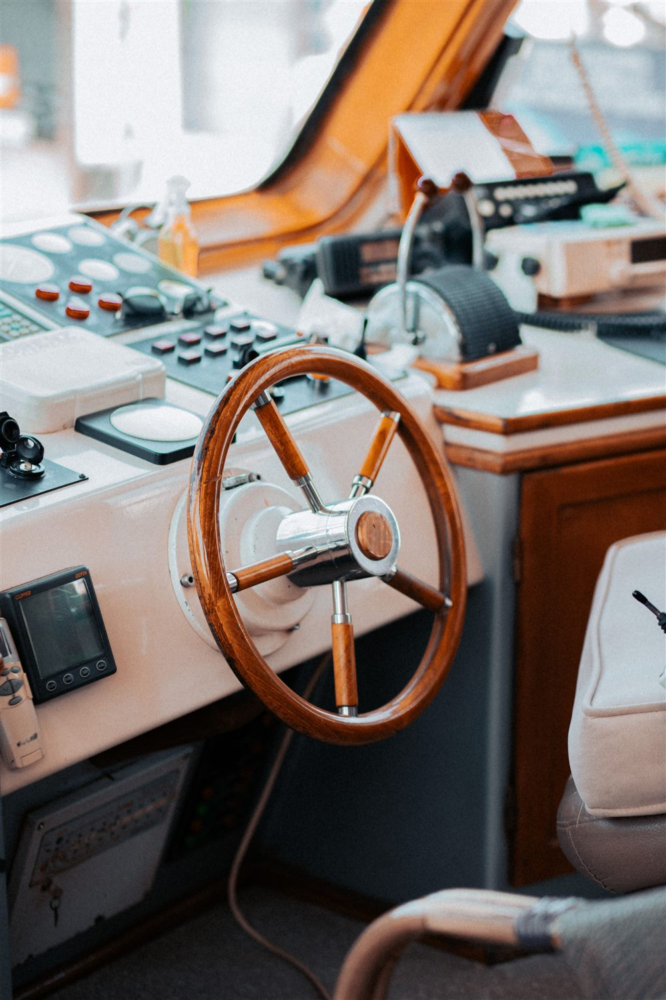
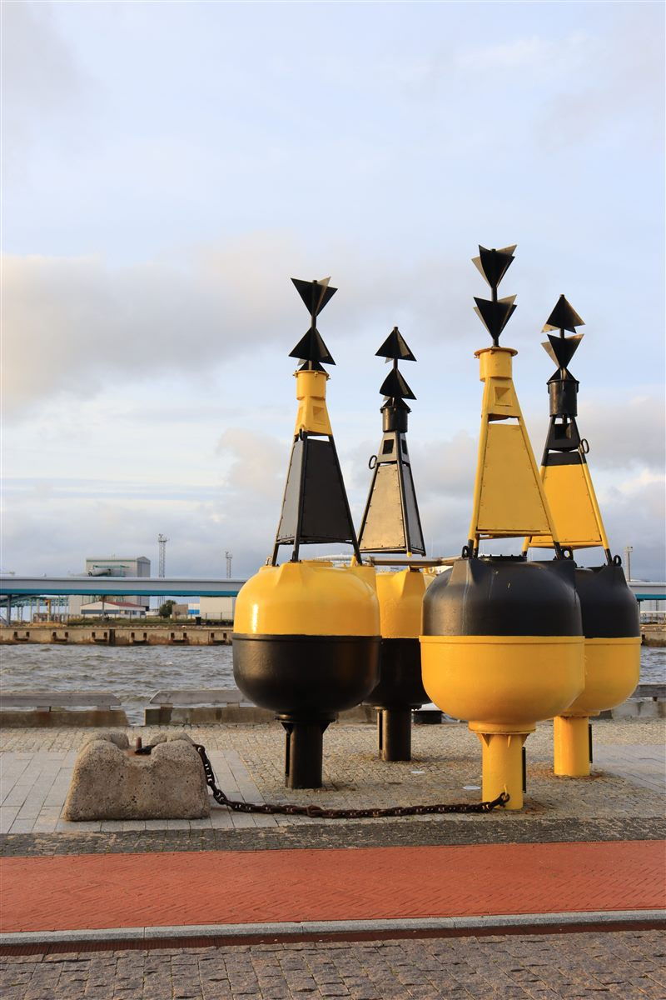

PERMIS CÔTIER
Permis côtier avec l’ATSCAF Voile.
Des connaissances pour mieux naviguer, une préparation collective à Paris et de la pratique sur la Seine avec un bateau-école partenaire.
Découvrir la prochaine session
- La préparation
- En groupe, à Paris
- La pratique
- Sur la Seine, avec un bateau-école
- Pour participer
- Être adhérent à la section voile
APPRENDRE ENSEMBLE
Des repères solides,
sur l’eau comme à terre.
La préparation au permis plaisance option côtière constitue un socle de connaissances maritimes utile aussi aux navigateurs à la voile : règles de barre, sécurité, balisage, cartes marines et VHF, directement applicables en croisière côtière.
Les chefs de bord expérimentés du club associent apprentissage du programme et partage d’expérience. Une façon de relier la théorie aux situations rencontrées en navigation.
Le permis permet de piloter un bateau à moteur dans la limite de 6 milles d’un abri et est obligatoire pour louer un jet-ski. Ses connaissances sont aussi précieuses en voilier et pour les futurs chefs de bord ; le permis est également demandé pour certaines locations de voiliers dans des pays européens.
LE PARCOURS
De la théorie à la barre
- Se préparer avec le club · 16 h
Sept séances thématiques, associant apports de connaissances et révisions de QCM, sont regroupées sur deux jours, sur un ou deux week-ends, au CISP Kellermann, à Paris 13e. Elles sont assurées par les chefs de bord du club.
- Réviser avec le bateau-école · 6 h
Une journée collective de révision obligatoire est organisée à partir de fin février, à une date en semaine commune au groupe, avec le bateau-école agréé partenaire, au port de l’Arsenal, à Bastille.
- Passer la théorie et pratiquer · 2 h de pilotage
L’examen théorique est un QCM de 40 questions, à passer à la date et dans le centre d’examen national choisis par le candidat. La mise en situation pratique évaluée comprend deux heures de pilotage sur la Seine avec le bateau-école. Le rendez-vous est pris lors de la journée collective de révision.
CALENDRIER 2027
La session 2027
La préparation est prévue sur deux jours, répartis sur un ou deux week-ends, au CISP Kellermann, à Paris 13e. La période envisagée est le dernier week-end de janvier ou un week-end de la deuxième quinzaine de février 2027 ; les dates précises restent à confirmer.
La journée obligatoire de révision avec le bateau-école aura lieu à partir de fin février, en semaine, au port de l’Arsenal. L’examen théorique se passe ensuite à la convenance du candidat ; le rendez-vous de pratique sur la Seine est fixé avec le bateau-école lors de la journée de révision.
LES CONNAISSANCES À ACQUÉRIR
Le programme de préparation
Après une introduction à l’organisation du permis, les sept séances abordent les thèmes suivants. Elles sont animées par Alex, Bernard, Biel, Fulvio, Gwenaël et Zoé.


-
Thème 01 · Les fondamentaux
Les bases et la réglementation
- Définitions et vocabulaire nautique
- Réglementation des activités nautiques
- Division 240
-
Thème 02 · Les éléments
Météo, marées et environnement
- Comprendre la météo et les marées
- Protéger l’environnement marin
-
Thème 03 · Se repérer
La carte marine
- Découvrir la carte marine
- S’initier à sa lecture
-
Thème 04 · Observer
Reconnaître les navires
- Marques des navires de jour et de nuit
- Privilèges des bateaux
-
Thème 05 · Anticiper
Prévenir les collisions
- RIPAM : règles de route et de barre
- Gisement et relèvement
- Signaux sonores
-
Thème 06 · Les signaux
Le balisage
- Balisage de jour et de nuit
- Signaux portuaires
-
Thème 07 · Protéger
La sécurité et les secours
- Utiliser le matériel de sécurité à bord
- Organisation des secours en mer
-
Thème 08 · Communiquer
La VHF
- Utiliser la radio VHF
- Programme réduit du certificat restreint de radiotéléphoniste (CRR)
LE BUDGET
Le tarif de la formation
Tarif de la session 2027 : 290 €, comprenant 16 h de préparation avec la section voile, un code Vagnon, 6 h de révision obligatoire avec le bateau-école agréé et 2 h de pilotage sur la Seine.
Un acompte de 150 € est à régler par virement pour valider l’inscription. Le solde de 140 € doit être versé avant le , avant le début du stage. L’acompte n’est pas remboursable en cas de désistement du candidat.
Le timbre fiscal électronique de 78 € pour la délivrance du permis et les frais d’examen de 30 € ne sont pas inclus, soit un budget indicatif de 398 € hors adhésions.
Si vous n’êtes pas encore adhérent, les cotisations à l’ATSCAF Grand Paris (22 € pour les agents du MINEFI) et à la section voile s’ajoutent à ce budget. Consultez les modalités d’adhésion.
Les frais annexes et les modalités de règlement sont à confirmer auprès du club avant tout paiement.
REJOINDRE LA FORMATION
Comment s’inscrire
- Demander une pré-inscription avant le 30 novembre 2026
Écrivez dès maintenant à atscaf.voile.paris@gmail.com. Les demandes sont prises dans l’ordre d’arrivée ; le club prévoit une réponse sous 24 h pour confirmer les disponibilités.
- Adhérer au club
Adhérez à l’ATSCAF Grand Paris et à la section voile, si ce n’est pas déjà fait, en suivant les modalités d’adhésion. L’adhésion seule ne réserve pas de place.
- Valider l’inscription par le versement de l’acompte
L’inscription est prise en compte à réception du virement de 150 € sur le compte de la section voile. Les coordonnées bancaires du club figurent sur l’accueil. L’acompte n’est pas remboursable en cas de désistement du candidat.
- Compléter le dossier avant le 10 janvier 2027
Constituez le dossier avec toutes les pièces ci-dessous, réglez le solde de 140 € par virement et envoyez le dossier par courrier. Demandez au club l’adresse d’envoi. Aucun dossier incomplet n’est accepté.
La session nécessite un minimum de 8 candidats. Si cet effectif n’est pas atteint à la date de clôture des inscriptions, la session sera annulée et l’intégralité des sommes avancées sera remboursée sans frais aux personnes déjà inscrites.
LES PIÈCES À RÉUNIR
Le dossier d’inscription
- Le formulaire CERFA n° 14681*03 de demande d’inscription.
- Un certificat d’aptitude physique sur le formulaire CERFA n° 14673, datant de moins de six mois. Imprimez ses deux pages sur une même feuille, en recto-verso : le médecin doit voir les conditions de la page 2. Un certificat sur papier libre n’est pas accepté.
- Le justificatif du timbre fiscal électronique pour la délivrance du permis (78 €).
- Une photocopie d’une pièce d’identité en cours de validité.
- Une photo d’identité récente, en couleur et aux normes.
- Le règlement du solde de 140 € par virement, avant le 10 janvier 2027.
Avant de constituer votre dossier, faites confirmer la liste des pièces, les formulaires en vigueur et les modalités de règlement pour la session choisie.
AVANT DE S’INSCRIRE
Les questions pratiques
Quand a lieu la prochaine session ?
La session 2027 est prévue au CISP Kellermann, à Paris 13e, sur deux jours répartis sur un ou deux week-ends. La période envisagée est le dernier week-end de janvier ou un week-end de la deuxième quinzaine de février 2027. Les dates précises restent à confirmer. La journée de révision avec le bateau-école est prévue à partir de fin février, en semaine. Contactez le club pour connaître les dates et les places disponibles.
Combien coûte la préparation ?
Le tarif de la session 2027 est de 290 €, code Vagnon inclus. Un acompte de 150 € valide l’inscription ; le solde de 140 € est à régler avant le 10 janvier 2027, par virement. S’y ajoutent 78 € de timbre fiscal et 30 € de frais d’examen, soit un budget indicatif de 398 € hors adhésions. L’acompte n’est pas remboursable en cas de désistement du candidat ; si la session est annulée faute d’atteindre le minimum de 8 candidats, les sommes avancées sont intégralement remboursées sans frais. Consultez le détail du budget.
Faut-il être adhérent ?
Oui, il faut adhérer à l’ATSCAF Grand Paris et à la section voile : deux cotisations distinctes. Pour 2026–2027, celle de la section est de 73 €, avec licence FFVoile offerte et obligatoire pour les activités. Les frais du permis sont en supplément et doivent être réglés avant l’activité. Après diffusion du calendrier, les demandes sont prises dans l’ordre d’arrivée ; l’adhésion seule ne réserve pas une place. Retrouvez les démarches et modalités d’adhésion sur l’accueil, puis contactez le club pour la pré-inscription.
Quels documents faut-il préparer ?
Retrouvez la liste des pièces et les formulaires du dossier d’inscription ci-dessus. Le certificat médical doit dater de moins de six mois ; seuls les dossiers complets sont acceptés.